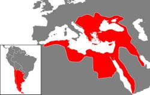

De: La Frikipedia, la enciclopedia extremadamente seria.
De: La Frikipedia, la enciclopedia extremadamente seria. De: La Frikipedia, la enciclopedia extremadamente seria.
| De la serie imperios antiguos: | |||||
| دولتِ عَليه عُثمانيه | |||||
| |||||
| Lema: Embrim? | |||||
| Himno: eret!
| |||||
| 
| |||||
| Capital(es) | | ||||
| Mayor ciudad | Estambul | ||||
| Lenguas oficiales | Turco, Árabe, Griego, Judeoespañol o sefardí, Español argentino | ||||
| Religión oficial | Islamismo | ||||
| Gobierno | Sultanato | ||||
| Sultán | Sultán (¡Coño, ¿qué no es obvio?!) | ||||
| Fecha de fundación | 1300 | ||||
| Caída | 1923 | ||||
| Edad de oro | 1450 - 1670 | ||||
| Periodo de Estancamiento o reseción | 1850's - 1900's | ||||
| Máxima Extensión | Según los Otomanos, tenían el imperio más grande de los 3 continentes:
| ||||
| Forma de economía | |||||
| Estados que se despacho | Bizancio, los Balcanes y El Caucaso (Donde no pasó nada) | ||||
| Población calculada | Muchos Turcos, más árabes, algunos critianos islamizados, unos argentinos y casi ningún armenio | ||||
| Moneda | | ||||
| Zona horaria | Muchas | ||||
| Legado(s) | KEBAB | ||||
| ¿Por que se vino abajo? | Lepanto, Jenizaros insubornidados, Sultanes asesinados, Guerra Ruso - Turca, Primera Guerra Mundial, Jovenes turcos, llegada del sijlo XX... elige uno. | ||||
| | |||||
El Imperio Otomano fue el más empeñado (y casi exitoso) intento de Turquía por entrar en la Unión Europea. Por supuesto, eso fue antes de que Turquía fuera Turquía (Cuando todavía era imperio) pero después de que Bizancio fuera Bizanció.
Se dice que había un guacamayo que le gustaba ir a las playas de Antioquía ¿Tiene playas? pero entonces se deprimió dejándose morir en la playa para que otros guacamayos se rieran produciendoles una gran alegría. Un pescado que nadaba por ahí vio tal proeza y se puso a nadar por ríos, mares, la carreta de un gitano, hasta llegar finalmente al estomago de un nativo de Turkestán. Está gente se dedicaba a la cría de ganado, a lamer piedras como todos los pueblos de la antigüedad y al intercambio de mercancías que es donde conocieron la fe de Mahoma. Estos seres primitivos pasaron a estar al servicio del Califa que necesitaba gente para explotar, de ahí que pasaron a vagar por las dunas hasta ocupar territorios que antes eran de los romanos pero como eran ineficientes los perdieron. Fundaron un enorme sultanato que fue aniquilado por los mongoles que una vez conquistado territorio se pusieron a probar la elasticidad de la población mediante yeguas descarriadas. Una vez que los cariñosos mongoles se fueron y les implantaron su ADN se dedicaron a reconstruir su sultanato, el encargado de la elaboración del plan para la dominación mundial sería Osmán
Los turcos tenían la extraordinario habilidad de infiltrarse en dominios bizantinos como vendedores de baratijas para luego irse comiendo al imperio desde adentro sin que el Basileos lo notase porque estaba demasiado ocupado tratando de escarmentar a sus parientes que querían arrebatarle el trono. Así los turcos al mando de Murad fueron tomando ciudad tras ciudad, provincia por provincia hasta llegar a las puertas de Constantinopla, tales conquistas obligaron al Emperador o Basileos a pagarle tributo a los turcos que ya no estaban gobernados por un Bey sino por un Sultán que era un título más importante.
Cómo no podían hacer caer Constantinopla debido a que estaba muy bien atrincherada, los turcos se pusieron a conquistar las zonas aledañas como Hungría o al menos eso quisieron por el momento
Los turcos siguieron arrasando hasta toparse con el Danubio que era lo único que los separaba de la prospera Hungría que estaba agitada por las matanzas que se daban entre ellos hasta que asumió el trono Segismundo que al notar la paliza que le estaba infringiendo las hordas turcos se junto con los otros príncipes vecinos en los que se encontraban Vlad II Drácul cuyo hijo sería el infame Vlad Dracul III mejor conocido como Drácula. Estos monigotes una vez juntados se mandaron a enfrentar al gigante turco y les fue muy mal al punto de que los europeos ya no se dedicaron a echar a los turcos sino a evitar que cruzaran la frontera y los llenaran de baratijas. Lo único que detuvo fue el serbio amotinado que haciéndose pasar por traidor apuñaló sin piedad al gran sultán Murad varias veces con una daga envenenada. Tal acto no sería perdonado por el hijo de este que haría un escarmiento en Bulgaria y aniquilaría a las fuerzas de Segismunfo en Nicopolis. Toda Tracia era de los turcos menos la preciada ciudad de Constantinopla. Se ha notado que han muertos más reyes como moscass en los campos de batalla contra los turcos que en cualquier otra guerra
Juan Hunyadi y sus oficiales en el sitio de Belgrado:
Noble: Cómo ve el campo señor
Juan Hunyadi: Yo lo veo muy jodío pero antes muerto antes que un Spahi me meta una lanza por el culo y me haga tirar truenos
Noble: Señor, Belgrado es una fortaleza formidable, es imposible que caiga
Juan Hunyadi: Y él cura Capistrano
Noble: Se mando al campo señor
Juan Hunyadi: Y yo que lo veía jodío de la cabeza
Fraile Capistrano: El dios que comenzó esto nos manda a terminar el trabajo sucio (Aparecen las camionetas negras con subfusiles MP5)
Juan Hunyadi: Arden como pollitos estos turcos
Juan Hunyadi moriría unas cuantas horas después a causa de la plaga producida por el rudimentario sistema sanitario. El fraile Capistrano y 2000 cruzados masacraron a los 5000 jenízaros que componían la guardia personal del Sultán que generalmente eran en su mayoría eran amigos de este por lo que tal hecho le provocó una profunda depresión que lo llevó a cometer múltiples intentos de suicidio. Así fue como dos curas y un príncipe derrotista juntaron a más de 30,000 paisanos mal armados para masacrar a una cantidad enorme de turcos que eran más del doble y al menos sabían como usar una cimitarra.
Los otomanos sufrieron su primer puñetazo con las invasiones de Tamerlán que era un tipo que hizo de todo para ser reconocido descendiente del Gran Khan buscando como objetivo volver al mundo cenizas y así lo hizo, utilizó al Sultán Otomano como un asiento para sentarse o un apoyador de pies. Para su suerte el imperio de Tamerlán duro menos que un soplido y los turcos pudieron sobrevivir, sin embargo les costo unas cuantas décadas recuperarse para volver a invadir Europa. Los turcos no pudieron conquistar Hungría a pesar de que les sacaban una proporción de 10 a 1, sin embargo eso no los desánimo y trataron nuevamente conquistar la amurallada ciudad de Constantinopla.

Más o menos resumida la cosa va así: Los Bizantinos habían resistido tropecientos quinimil intentos de asedio (no consecutivos). Así que a un tal Constantino XI Paleólogo se le hizo fácil hacerse el valiente con los Otomanos aún cuando el imperio Otomano rodeaba casi totalmente el territorio del Bizantino (¡Va que no era el más Genio de los Paleólogos este!).
Una fría cálida mañana de 1453 ambos discutían en la tienda de café:
Mehmet II: Y... Dicen las malas lenguas que exiges un tributo para un princesillo otomano perdido que aparentemente tienes cautivo por ahí
Constantino XI: ¡Ah, sí! ya sabía
Mehmet II: Entonces... ¿no era broma eso de la exigencia?
Constantino XI: ... (Mirando de un lado a otro demostrando duda ante lo obvio de la pregunta) mmmm... Nop
Mehmet II: Y... ¿no crees que es buen momento para retractarte?
Constantino XI: ... (La mirada periste)... mmm... Tampoco
Mehmet II: ¿Sabes que Podemos invadirlos por todas los flancos posibles? eh!!!!
Constantino XI: Intenten cuantas veces quieran, tenemos murallas
Mehmet II: Nosotros tenemos un cañones
Constantino XI: Nosotros hemos resistido asaltos y asaltos
Mehmet II: ¡AH SI! Pues nosotros movilizaremos una ofensiva por mar
Constantino XI: ¡AH SI!, ¡pues nosotros cercáremos el acceso por mar con una cadena gigante![1]
Mehmet II: ¡AH SI! ¡Pues nosotros pasaremos los barcos por tierra![2]
Constantino XI Paleólogo: ... ... ... ¡XD!; "sí, claro: mira como tiemblo"
Luego de darle una patada en los cojones a los serbios, a los albanos, a los bizantinos, a los griegos, a los húngaros y a medio dios había un hecho factible que mandaría a cagar a todo el imperio turco y ese era los mismos turcos, ya que estos se mataban encarnizadamente entre si por la herencia que dejaba su padre al morir y por lo general los turcos tenían como mínimo ocho hijos por lo que las matanzas entre parientes por el gold era algo de lo más común.
Una vez muerto Mehmed a manos de un sicario enviado por los veneciano y que luego sería linchado por los jenízaros surgiría un conflicto sucesorio entre los dos hijos de Mehmed, Cem y Bayezid. Para evitar matanzas internas se les propuso una competencia, el primero en llegar al palacio se queda con el trono pero Cem nunca se enteró de esto a causa de intrigas producidas por los mafiosos de la corte, esto causo su enojo y le declaró la guerra a sus hermano, sin embargo fracasó y se exilió a la isla de Rodas en busca de protección.
Bayezid tuvo ocho hijos a los cuales engañaba para que murieran accidentalmente y así quedar uno solo pero no todos fueron tan idiotas. Uno llamado Selim con el apoyo de los jenízaros logró que su padre le cediera el trono obligadamente, una vez sentado mando a matar a todos sus primos y hermanos para que no lo molestaran mientras jugaba. Selim era un fanático religioso de la rama sunnita del Islam por lo que masacro a las comunidades chiítas y les expropio los bienes, fuera de eso fue un prodigio en lo que sería administración de empresas aplicada a un imperio enorme creado a sangre y fuego. Gracias a su obra el último de los mamelucos se rindió ante él junto a todo el norte de África. Murió con el título de Califa de todos los musulmanes, su hijo Suleymán seguiría sus pasos.
El nieto de Selim recibió una buena patada en los cojones en Lepanto por querer quedarse con Chipre y el hijo de este se dejo influenciar por el harén en la toma de decisiones dando a notar cada vez la falta de racionalidad por parte de los sultanes en la administración gubernamental. Los sultanes empezaron a dejar de trabajar y pasar más tiempo en el harén dejandole todo el poder al Gran Visir que cada vez ganaba más poder en la corte dando comienzo a una época de anarquía debido a la enemistad entre Spahis y jenízaros por la toma de posesión de su candidato al trono de Sultán
Le dedicamos una sección a este personaje porque nos ha generado una profunda admiración, no porque se ha un retorcido mental sino por su obra, ya que se interpuso frente a sus corruptos antecesores tratando de salvar lo que quedaba de su imperio.
Murad nació un 16 de junio de 1612. Llegó al trono mediante las intrigas del palacio y la corrupción. En su niñez siempre fue manipulado por su madre, hasta que entró en un estado de Shock cuando los jenízaros irrumpieron en el palacio y degollaron ahí mismo al Gran visir que no le era favorable entre otros nobles cercanos. Suprimió las rebeliones que asolaban su imperio quitandole la vida a más de 20,000 personas, una vez terminado.
«Una vez ido de este mundo mata a mi hermano, a la puta de mi madre, al maldito visir y que te maten a ti por feo»
~ Murad IV unos segundos antes de caer en los brazos de Allah
Siguió la costumbre de matar a sus hermanos y primos e intento acabar la corrupción mediante la tortura sumada a su mano de hierro. Prohibió el alcohol, el tabaco, el hachís, las drogas alucinógenas de oriente entre otras cosas y si veía a alguien en la vía pública fumando sacaba su enorme cimitarra y le cortaba la cabeza ahí mismo. Fuera de eso seguía siendo un alcohólico peligroso que genero la frase has lo que yo digo pero no lo que yo hago.
Murad siempre fue desconfiado hacia las mujeres e incluso su madre que para que no tuviera descendencia, cosa que paso, lo quiso incitar hacia la homosexualidad mostrandole a diario chicos lindos, pornografía gay entre otras cosas. Murad tenía un trastorno leve hacia las mujeres porque no sabía si las amaba o si las odiaba pero en realidad el no las quería ver felices. Cuentan que una vez caminando por ahí vio a un grupo de mujeres sonrientes lavando la ropa en un arroyo, qué hizo Murad, lo más suave fue mandarlas a que fueran ahogadas después queda ante los ojos de Allah.
Murad era un luchador temible y sus enemigos temblaban de miedo al ver lo enorme que era. Su mayor logró fue recuperar las regiones pérdidas frente a Persia con su enorme maza de 50 kilos de acero puro, cuantas cabezas habrán sido aplastadas por ella. Muchos sintieron pena por su temprana muerte a los 27 años a causa de una cirrosis en su hígado producto de su desenfrenado alcoholismo porque tenía un enorme repertorio de ideas que hubieran llevado al Imperio nuevamente a su esplendor anterior, sería el último en gritar Conchetumare muérete! en un campo de batalla. Con él acabaría el reinado de los grandes sultanes y empezaría un período de decadencia marcado por la corrupción interna y el poder acumulado en unos cuantos tipos que llevaría a la caída del imperio después de la 1era guerra mundial.
Suponiendo que no vives debajo de una piedra, quizás los recuerdes del Age of Empires como la unidad elite, sino permiteme burlarme de tí: JA - JA - JA.
Los Jenizaros eran la élite del ejército otomano que se encargaba de proteger al sultán. Estaban formados por niños de 7 a 14 años que habían caído bajo las manos del sultán, los actos de pederastia eran totalmente aceptados siempre y cuando el abusado fuese de menor rango. Estos niños prisioneros de procedencia griega o albanesa no calienta recibían un duro entrenamiento parecido al espartano, no podían dejarse crecer la barba porque solo las personas fieles a dios podían tenerla y ellos eran considerados cosas o soldaditos de plomo, tampoco podían tener descendencia ni casarse o sea su modo de vida era enclaustrado como el de un monje.
Estos tipos llegaron a tener un inmenso poder político debido a la ineficiencia de los sultanes y los botines obtenidos durante las guerras contra Europa que siempre fueron exitosas por lo general haciendo costumbre el hecho de que un grupo de jenízaros fuera como si nada al palacio del sultán, matara a la mayoría de los consejeros que no les gustarán y se fueran tranquilamente por la puerta que entraron.
El sultán quiso deshacerse de ellos a causa de su ineficiencia frente a las armas occidentales, como los jenízaros se oponían el sultán creó un nuevo ejército equipado con armas nuevas de Europa que aniquilaron finalmente a este cuerpo de élite que en su época dorada llegó a tener 200,000 miembros. Los últimos jenízaros nunca más tomaron las armas contra el sultán y se dispersaron tomando oficios comunes.
Los Sipahis o Cipayos eran un cuerpo de caballería proveniente del norte de África siguiendo las tácticas de batalla de los fieros guerreros Bereberes. Su existencia fue terminada cuando el imperio turco realizo reformas importantes para modernizar el ejército. Fueron famosos en su actuación como mercenarios durante la colonización de la India por parte de los ingleses.
El gran cañon turco[3] (¿Suena acojonante verdad?), también conocido como "la Bombarda Otomana" (No tan acojonante, pero igual suena bien). Recientes hallazgos arqueológicos demuestran que originalmente la bombarda otomana era un horno giratorio construido para cocinar Kebab, alimento predilecto del imperio. Cuentan los textos viejos que un 2 de otoño del 1111 un cocinero real estaba haciendo un kebab de poll@ para el sultán y toda su corte, cuando vió a una hermosa armenia dando vueltas por ahí, lo que llevó a que descuidara la bombarda(horno). Lo que sigue después esta confuso en los textos, solo hay imágenes de un tipo con delantal blanco empomándose a una mujer atada (véase Follar) pero se cree que la bombarda-horno explotó y envió el kebab que estaba cocinando directo hacia las murallas de constantinopla, y abrió un boquete (aujero) en la misma. Esto fue observado desde el google earth por el mismo sultán en bolas, el cual era muy astuto (a pesar de estar desnudo), y lo convirtió en un arma formidable conocida ma'delante como la Bombarda Otomana.
Con un cañon de 5 toneladas y una bala de 63 cm de diametro puedes:
Autor(es):